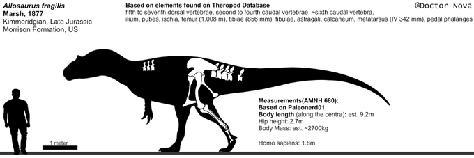

For dinosaur enthusiasts, the word "Jurassic" might picture a giant theropod other than Tyrannosaurus. The Morrison Formation's apex predator, Allosaurus, a fearsome predator with a terrifying bite and unmatched speed for it's size. Allosaurus is the most common, and arguably one of the most well-known Jurassic predators.
Allosaurus was built like the typical giant theropod, having a massive skull on a short neck, a long sloping tail, and large arms with 3 sharp claws.One of this dinosaur's most distinguished characteristics is the pair of horns above and in front of it's eyes that varied in shape and size, there were also a pair of ridges running on top of the nasal bones that led to the horns. Paleontologists have speculated that these horns were covered on keratin and could have had many uses:
The best-known species of Allosaurus, A. fragilis has been estimated to be 8.5 m in length, and weighing 2 tons, with the largest specimen being AMNH 680 being estimated to measure 9.2 m long and weighing 2.7 tons
Allosaurus europaeus is the smallest known species of Allosaurus, having being measured at 7m in length, and weighing 1 metric ton. Found in the Lourinhã Formation, Portugal.
The most recently found species during the writing of this article. This species was described on 2020